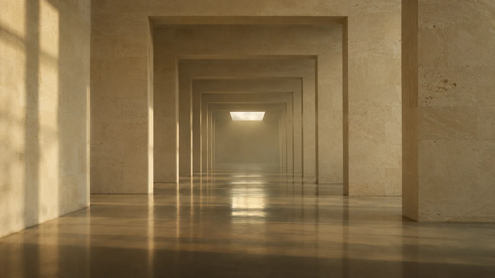
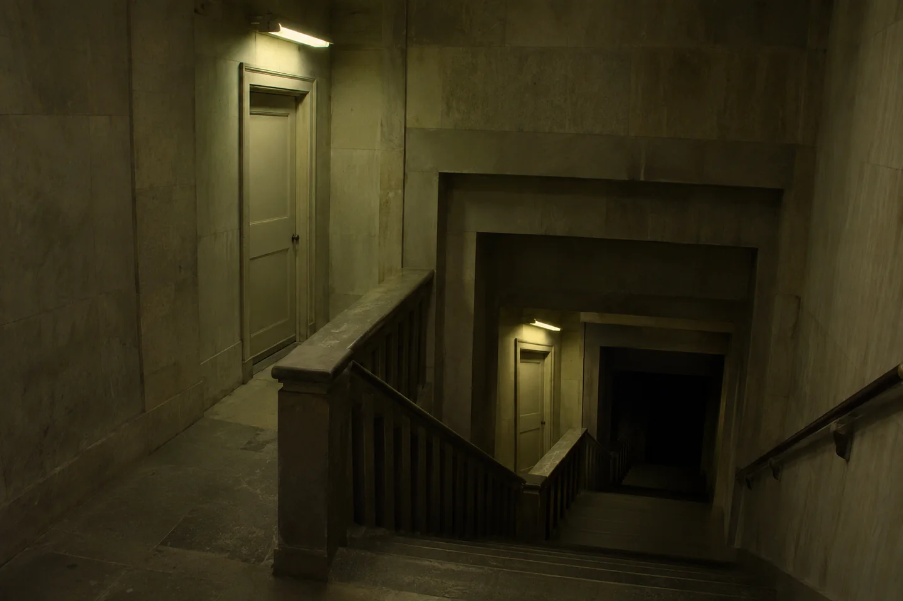
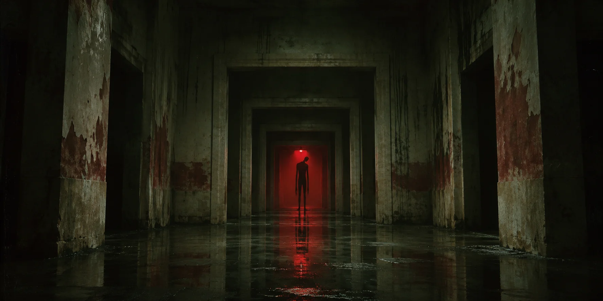
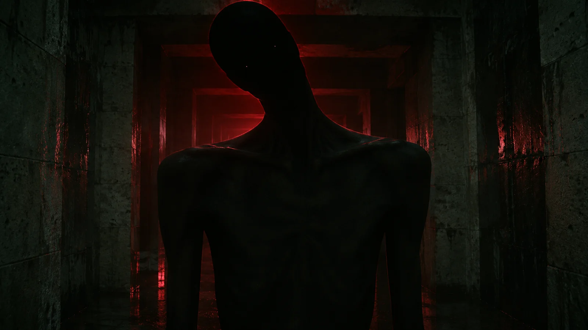

社区阅读空间 / 旧屋改造
岸边阅读室
把可以交谈的长桌留在入口，把适合久坐的窗边留给一个人。
查看项目空间声学设计
静室是一间空间声学工作室。我们为阅读、交谈和录音设计室内空间，从材料和构造入手，调节房间里听得见的声音。
了解设计方法
设计服务
我们从实地聆听开始。声音怎样穿过一间房，又在哪里停下，决定了接下来的每一步。
用布面、穿孔板与多孔材料缩短回响。先找出反射较明显的表面，再决定处理的位置。
检查墙体、门窗和设备管线，让谈话、音乐与脚步声尽量留在它们发生的房间。
按空间的用途安排声源和座位。为读书的人留出安静的位置，也给交谈留一张桌。
项目图纸、材料样板和复测记录会随方案一并交付。每个阶段都留出现场试听的时间。
记录平面、围护结构和实际使用时段。在门窗、空调和设备的不同状态下听一遍，把声源和最受影响的位置标在同一张底图上。
先安排相邻空间的用途，再处理门、墙、顶面和风管。交付声环境分区图、构造节点和需要施工方配合的检查清单。
在现场用可拆的样板对比布面、穿孔木板和保留墙面。光线、触感、清洁方式和维修路径会一起纳入选择。
按原来的点位复测，记录门窗和设备状态。最后和使用者走一遍日常路线，把仍需调节的地方留在交付记录里。
设计手记
记录材料试验、交付后复查，以及设计图上容易遗漏的声音。
合作前
可以先从家具位置、门缝和可以更换的表面检查起。如果声音沿墙体或共用风管传来，方案还需要考虑拆改范围与施工条件。
一张平面图、几张现场照片、每天的使用时段。再记下什么时候最容易听见那种声音，最好能指出第一次发现它的位置。
踏勘会选安静和正常使用的两个时段。施工是否腾空取决于改动范围，布帘、家具脚垫等调整通常可以与日常使用错开。
靠墙、居中和站在门口听到的声音会不同。复测保留原来的位置、门窗和设备状态，前后的记录才容易比较。
线上样板间
样板间保留了大面积石材。沿路比较三处不同的听感，就能理解我们怎样决定哪里需要处理。
跨进第一道门，听脚步从室外进入门厅后怎样变化。
坐在石凳边，等入口的脚步声过去，再听一遍房间的底声。
在第三道门前停下。返程沿原路返回入口。
样板间 / 闭馆后复测
SR–03 ／ 18:42闭馆后，测量员沿着走廊走了两遍。第二遍，尽头多了一扇亮着的门。他抬头时，门已经到了天花板上。
复核人把那张底片夹在旧版导览里。目录上，第三道门仍然是终点。

复测档案 / 回廊尽头
SR–04 ／ B1
第三道门后有一段楼梯。两处平台都标着 B1，门上的磨痕也在同一个地方。
从长凳端头量至第三道门，去程是十二米多。沿原路折返，卷尺多放出了近三米。长凳一直在视线里。
「我已经下到下一层了。」通话对端请他念一下门牌。过了几秒，留在楼上的人先听见自己的声音从门后念出「B1」。
楼梯方向停止传回信号。监控室接入 B1 固定机位，只收到走廊画面。话筒仍在工作。
监控室 / 地下层

